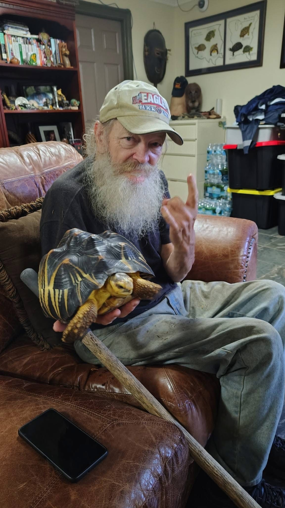
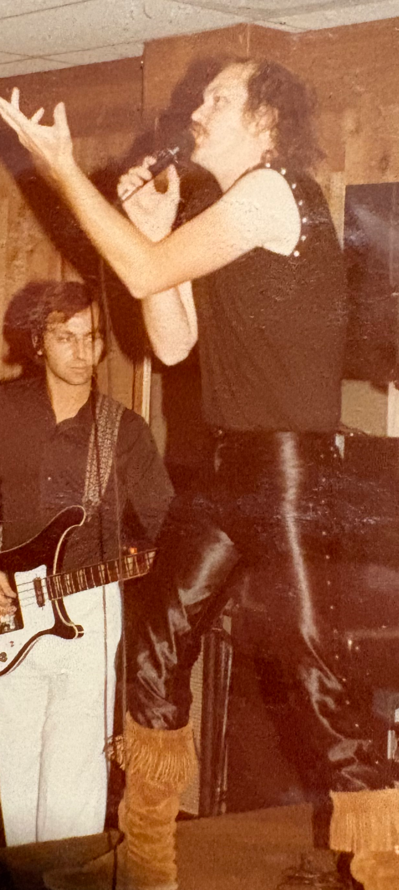

John C. Lewis
The Creature from ClearWater

Who is John Lewis?
His hobbies include playing tabletop games such as Dungeons & Dragons, WARHAMMER 40K, Call of Cthulhu, STARFINDER and his favorite HOLLOW EARTH. He enjoys collecting various toys, figures and statues from but not limited to; MARVEL and DC comics, stuffed animals, GODZILLA (nicknamed "BIG G"), POKÉMON, and miniatures from WARHAMMER 40K, Lord of the Rings, DUNGEONS & DRAGONS.
How a Veteran Taught Me to Spot Value, Condition, Context, and the Stories Behind the Issues
I have to thank John for getting me into collecting comic books, graphic novels, and omnibuses. For him this hobby spans nearly 60 years—he's 71—and his collection fills more than just shelves; it could fill a small moving truck. John doesn't just own comics; he knows their histories. Name a character and he can tell you release dates, run lengths, popularity arcs, and notable appearances. That knowledge makes sense: he once owned a shop called Comics and Critters, and he's lived through the major eras of the medium.


Rolling with a Mentor
Playing Dungeons & Dragons with John over the years is entertaining, intriguing, engaging, immersive, stimulating and even spellbinding. My impression with John's DND campaign (setting) of Lose Wyrld at first was confusing and unorthodox at times, yet the most rewarding and fulfilling after learning and adapting to his playstyle.
His Love for Animals
He continues to this day with Phil, his childhood friend's farm, raising various animals especially reptiles of which his favorite are turtles, if counting the babies there are several hundred turtles that he raises annually and his favorite turtle is going on 60 years named "ROCKY".


BLACK VELVET
He played in multiple bands for years. Especially with his childhood friend Phill, they still raise animals together on their farm. Their longest running band was a heavy metal band called BLACK VELVET.
Below is their band name with logo and a song they called "Chasing the Dragon"